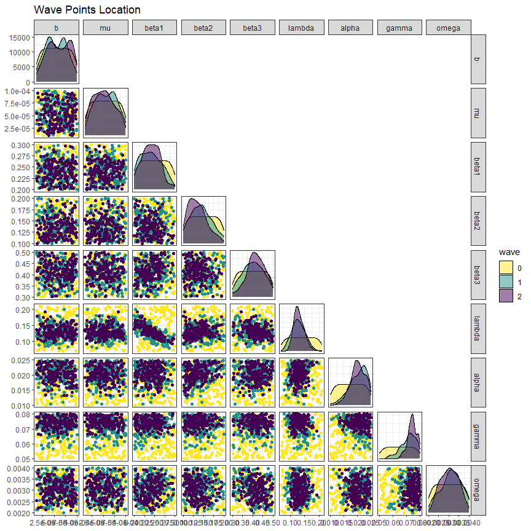
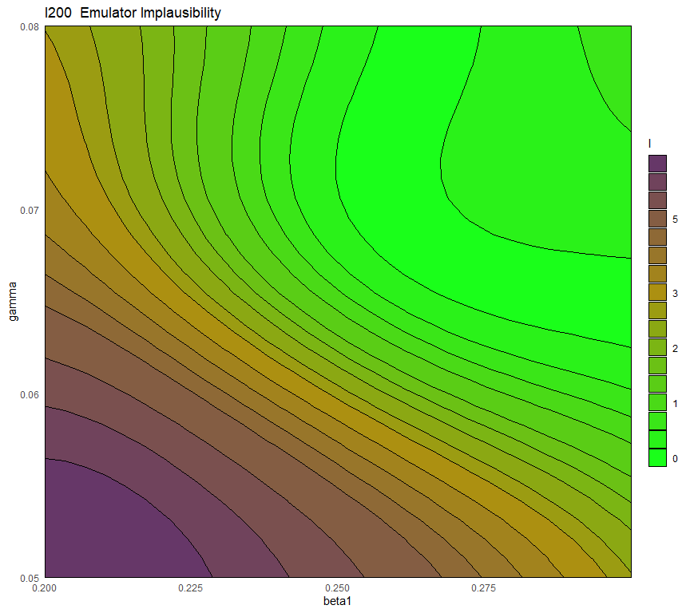
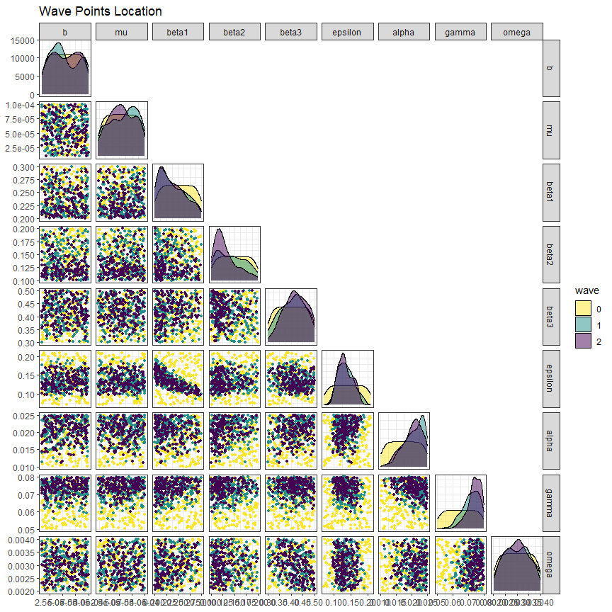

10 Visualisations of non-implausible space by wave
In this last section we present three visualisations that can be used to compare the non-implausible space identified at different waves of the process.
The first visualisation, obtained through the function wave_points, shows the distribution of the non-implausible space for the waves of interest. For example, let us plot the distribution of parameter sets at the beginning, at the end of wave one and at the end of wave two:
wave_points(list(initial_points, new_points, new_new_points), input_names = names(ranges))
Here initial_points are in yellow, new_points are in green and new_new_points are in purple. The plots in the main diagonal show the distribution of each parameter singularly: we can easily see that the distributions tend to become more and more narrow wave after wave. In the off-diagonal boxes we have plots for all possible pairs of parameters. Again, the non-implausible region identified at the end of each wave clearly becomes smaller and smaller.
The second visualisation allows us to assess how much better parameter sets at later waves perform compared to the original initial_points. Let us first create the dataframe wave2:
new_new_initial_results <- setNames(data.frame(t(apply(new_new_points, 1,
get_results, c(25, 40, 100, 200, 300, 350),
c('I', 'R')))), names(targets))
wave2 <- cbind(new_new_points, new_new_initial_results)We now produce the plots using the function simulator_plot:
all_points <- list(wave0, wave1, wave2)
simulator_plot(all_points, targets)
We can see that, compared to the space-filling random parameter sets used to train the first emulators, the new parameter sets are in much closer agreement with our targets. While there wasn’t a single target matched by all parameter sets in wave zero, we have several targets matched by all parameter sets in wave (I25, R25, R40, R100, R200). Subsequent waves, trained on the new parameter sets, will be more confident in the new non-implausible region: this will allow them to refine the region and increase the number of targets met.
simulator_plot has the argument normalize, which can be set to TRUE to rescale the target bounds in the plot. Similarly, the argument logscale can be used to plot log-scaled target bounds. Explore these options and get visualisations that are easier to interpret.
In the third visualisation, output values for non-implausible parameter sets at each wave are shown for each combination of two outputs:
wave_values(all_points, targets, l_wid=1)
The main diagonal shows the distribution of each output at the end of each wave, with the vertical red lines indicating the lower and upper bounds of the target. Above and below the main diagonal are plots for each pair of targets, with rectangles indicating the target area where full fitting points should lie (the ranges are normalised in the figures above the diagonals). These graphs can provide additional information on output distributions, such as correlations between them. the argument l_wid is optional and
helps customise the width of the red lines that create the target boxes.
In this workshop, we have shown how to perform the first two waves of the history matching process, using the hmer package. Of course, more waves are required, in order to complete the calibration task. Since this is an iterative process, at the end of each wave we need to decide whether to perform a new wave or to stop. One possible stopping criterion consists of comparing the emulator uncertainty and the target uncertainty. If the former is larger, another wave can be performed, since new, more confident emulators can potentially help further reduce the non-implausible space. If the uncertainty of emulators is smaller than the uncertainty in the targets, improving the performance of emulators would not make a substantial difference, and additional waves would not be beneficial. We may also choose to stop the iterations when we get emulators that provide us with full fitting points at a sufficiently high rate. In such a case, rather than spending time training new emulators, we can simply use the current emulators and generate points until we find enough full fitting ones. Finally, we might end up with all the input space deemed implausible at the end of a wave. In this situation, we would deduce that there are no parameter sets that give an acceptable match with the data: in particular, this would raise doubts about the adequacy of the chosen model, or input and/or output ranges.